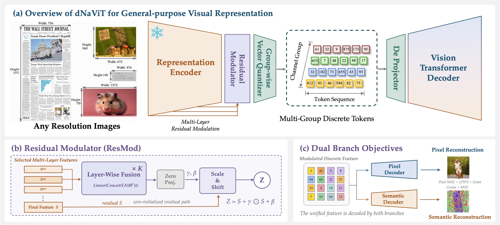
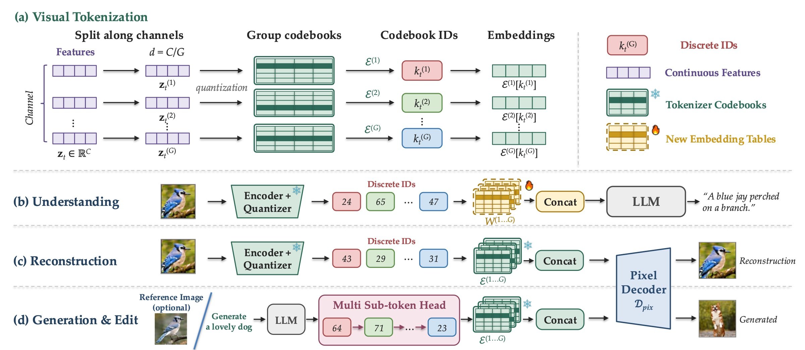
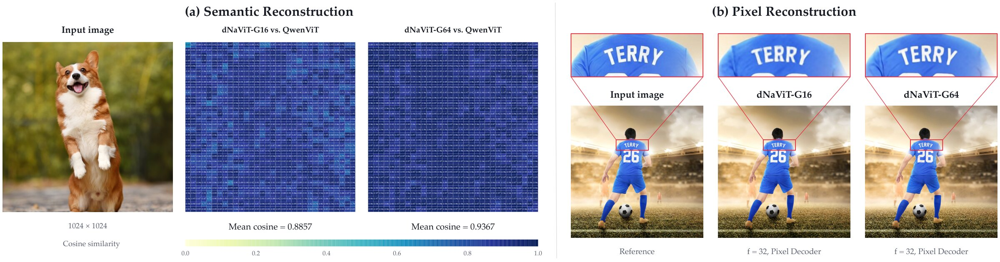
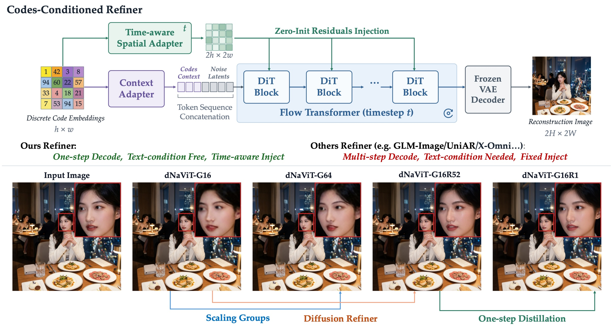
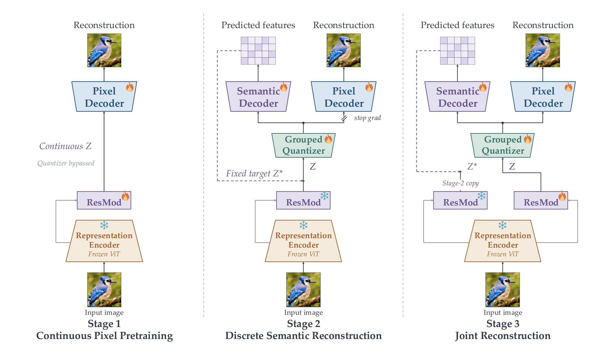
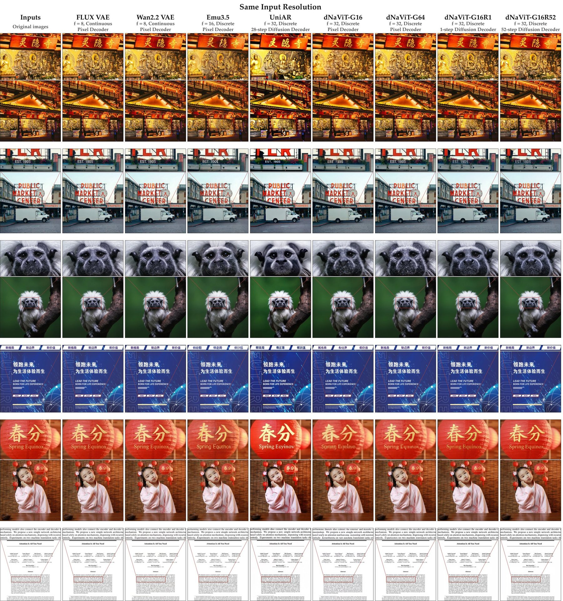

dNaViT
Discrete Codes are General-Purpose Visual Representations
Meituan LongCat TeamA Discrete Native-resolution Vision Transformer

Can a finite discrete vocabulary represent the richness of the visual world?
Language models are built on discrete tokens and next-token prediction. Multimodal models, by contrast, usually keep separate continuous encodings for perception and synthesis. dNaViT asks whether vision can follow the language path: one learned vocabulary of discrete codes that serves understanding, reconstruction, generation, and editing alike.
Building on a frozen pretrained vision encoder, dNaViT uses lightweight residual modulation to enrich semantic features with reconstruction-relevant detail. Grouped product quantization expands discrete capacity without lengthening the spatial sequence, while dual-branch reconstruction and a progressive training recipe balance semantic fidelity and pixel accuracy within the shared bottleneck. As a single representation, it performs comparably to or better than specialized models across 12 understanding benchmarks, 4 generation benchmarks, and an editing benchmark.
Residual Modulator
Fuses multi-level features of a frozen encoder and predicts a zero-initialized scale-and-shift residual, adding detail without disturbing semantics.
Grouped product quantization
Splits each feature into G channel groups with their own codebooks: up to KG combinations at the same token count.
Dual-branch, three-stage training
Semantic and pixel decoders share one discrete bottleneck, introduced progressively to avoid gradient interference.
From a frozen encoder to a shared discrete vocabulary
dNaViT enriches the features of a frozen native-resolution encoder, quantizes them group by group, and decodes the same codes into both semantic features and pixels. Step through the pipeline below.

Residual Modulator
Quantization can collapse weakly expressed appearance differences into the same code. ResMod exposes complementary cues from several encoder depths while keeping the final semantic representation \mathbf{S} as an anchor. Its affine head is zero-initialized, so at the start of training \mathbf{Z}=\mathbf{S} exactly.
Grouped product quantization
Each position's feature \mathbf{z}_t\in\mathbb{R}^C is split into G groups, each matched to the nearest entry of its own K-entry codebook. Capacity grows with G while the number of spatial tokens N_q stays fixed.

Dual-branch reconstruction
The same quantized embeddings \mathbf{C} feed two decoders. The semantic branch regresses the post-ResMod features with a cosine plus MSE loss; the MSE term guards against anisotropic features where cosine alone looks deceptively small. The pixel branch unmerges tokens back to the native grid and is trained with L1, MSE, LPIPS, ConvNeXt perceptual, and Gram losses.

Refiner: a code-conditioned flow decoder
Discrete codes only partially specify fine appearance, so a direct ViT pixel decoder tends to over-smooth. The Refiner replaces it with a flow decoder built on a pretrained image-generation prior, conditioned on the codes through global context tokens and time-conditioned spatial residuals. A multi-step teacher trained by flow matching is distilled into a one-step student with adversarial supervision. The codes themselves do not change.

Three stages: continuous first, discrete second, joint last
The tokenizer pairs a pretrained Qwen3-VL ViT (~400M parameters) with a residual modulator (~100M), about 500M parameters in total. The ViT stays frozen throughout. Learning complementary detail is separated from adapting it to the discrete bottleneck, so pixel gradients never disrupt the semantic codes while they are still forming.

Continuous pixel pretraining
ResMod's output Z goes straight to the pixel decoder, bypassing the quantizer. Minimizing the pixel loss trains ResMod and the pixel decoder together, so the residual pathway learns to expose reconstruction-relevant information before a finite vocabulary is introduced.
Discrete semantic reconstruction
ViT and ResMod are frozen; their output Z is both the quantizer input and the fixed semantic target Z*. The quantizer and semantic decoder learn to reconstruct it, while the pixel decoder trains on detached codes, so pixel gradients cannot disrupt the codes while they are initialized.
Joint reconstruction
ResMod is unfrozen as a student while a frozen Stage-2 copy keeps supplying the target Z*, preventing target drift. Removing the stop-gradient lets pixel gradients reach the quantizer and the student ResMod under the joint dual-branch loss.
Data
The tokenizer is trained on images only, combining general-domain collections (LAION, COYO, DataComp, Recap-DataComp-1B, CapsFusion and in-house data), text-rich images and documents (TextAtlas5M subsets, Chinese and English book and news pages, infographics, ChartGalaxy), and fine-grained or high-aesthetic images (face-focused LAION subsets, SA-1B-derived images). Training starts at a fixed 256×256 and moves to native resolution up to 2K with a balanced resolution mix, over several hundred billion tokens in total.
One vocabulary, five kinds of task
dNaViT is evaluated on reconstruction, frozen-feature classification, multimodal understanding (paired with Qwen3-8B), text-to-image generation, and instruction-guided editing. Bars show selected models per benchmark; dNaViT is highlighted.
Full benchmark tables
Baseline numbers are taken from published reports and may use different training data, resolutions, prompting, and scoring protocols. * denotes values evaluated by the authors where no reported number was available. A dash denotes an unavailable value.
Reading dense pages through discrete codes
Qualitative examples of the 8B understanding model (the frozen dNaViT-G16 tokenizer with Qwen3-8B) on challenging visual inputs: dense full-page documents in English and Chinese, cursive handwriting, an engineering drawing, and diagram-grounded reasoning. Responses are reproduced verbatim, including the model's own errors. Long transcriptions are truncated at a paragraph boundary, and where the model produces an explicit reasoning trace, only the final response is shown.
Same codes, sharper pixels
With visual representation and input resolution fixed, the ViT pixel decoder reliably preserves layout, color, and semantics but over-smooths high-frequency detail. The Refiner, conditioned on the same codes, recovers sharper letter contours and textures, which shows the codes carry more information than direct pixel decoding recovers.

Generated with dNaViT-8B
A selection of images generated by dNaViT-8B from text prompts. Tiles are cropped for layout; click any image to view it in full.
BibTeX
@misc{li2026dnavitdiscretecodesgeneralpurposevisual,
title={dNaViT: Discrete Codes are General-Purpose Visual Representations},
author={Xiaotong Li and Zhengrong Yue and Xu Huang and Jialv Zou and
Minhao Jing and Wenhao Yan and Haodong Li and Hai Huang and
Bo Zhao and Yan Feng and Peng Pei and Xunliang Cai},
year={2026},
eprint={2611.12426},
archivePrefix={arXiv},
primaryClass={cs.CV},
url={https://arxiv.org/abs/2611.12426},
}
Contributors
Xiaotong Li*, Zhengrong Yue*, Xu Huang*, Jialv Zou*, Minhao Jing, Wenhao Yan, Haodong Li, Hai Huang, Bo Zhao, Yan Feng, Peng Pei, Xunliang Cai
*Equal contribution. Correspondence: lixiaotong.edu@gmail.com